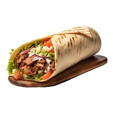
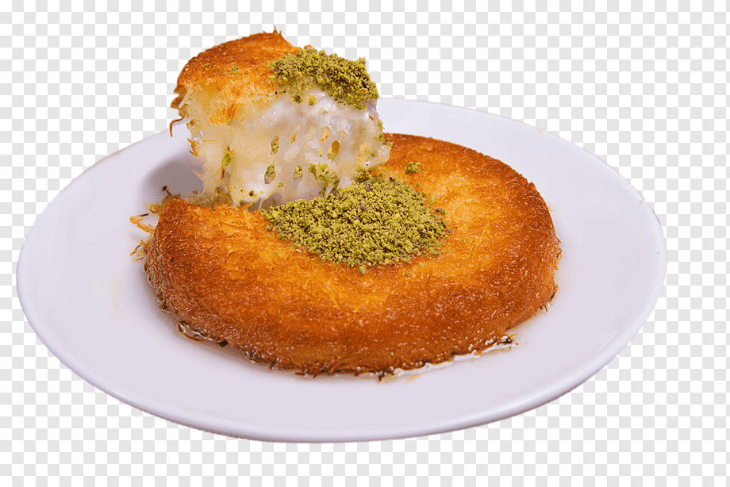

Doner kebab or döner kebab is a Turkish dish made of meat cooked on a vertical rotisserie. Seasoned meat stacked in the shape of an inverted cone is turned slowly on the rotisserie, next to a vertical cooking element. The operator uses a knife to slice thin shavings from the outer layer of the meat as it cooks

Künefe is a variant of knafeh believed to have originated in Hatay Province, Turkey. It is filled with a mozzarella-like local Hatay cheese and coated in "a syrup made of water, sugar and lemon juice."